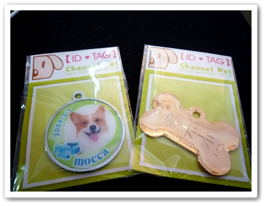
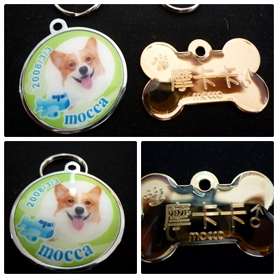
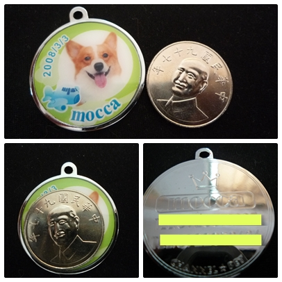
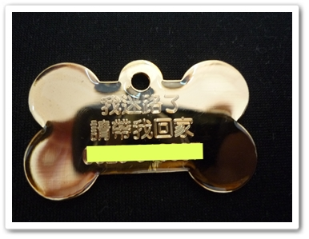
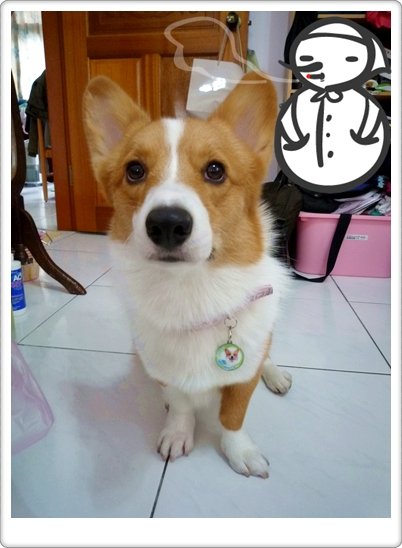
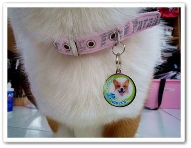
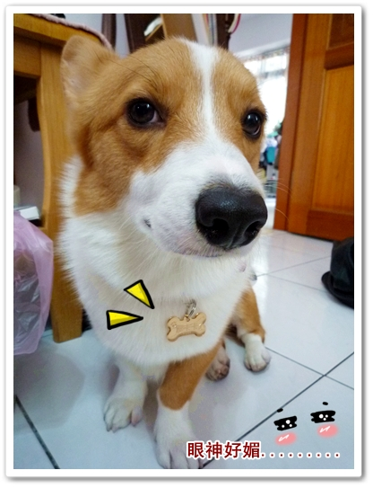
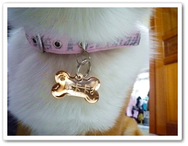

最近跟了P麻開的Channel Pet名牌團
最近跟了P麻開的Channel Pet名牌團
幫摩卡卡做了一直很想弄的名牌！
因為摩卡卡本人一直沒有識別證，都是靠那雙靈活小眼睛在當標記！XD
(眾：咦!他眼睛好小歐~是摩卡卡嗎? 母：嘿丟!都系依..... )
)
因為胸背有兩個，我也懶得在那換來換去的！重點是兩款我都想要！哈
所以一次做了兩款金屬名牌跟彩色名牌

拿到名牌時一點都不會有失落感，看起來真的超有質感的！
尤其是金屬名牌非常之閃亮亮！

另一款彩色名牌我幫卡卡選了"蘋果綠小飛機"
顏色我很喜歡，跟Channel pet網頁上沒有太大的落差！
跟10元硬幣做比較大概比它大一點，背後是純文字，我留了名字跟電話號碼！

金屬名牌背後也是純文字，我寫了：我迷路了，請帶我回家！
赫然發現這請帶我回家有語病，哈！P麻說大家都寫請幫我回家之類的
如果真的有人把卡卡帶回家看我怎嘛辦!? 哈哈～真阿呆耶我！
哈哈～真阿呆耶我！

我先把名牌扣在頸圈上給摩卡卡載上，
這小子太久沒被我抓來拍定裝照了，表情很僵硬又一直想偷跑
看樣子我最近很少買東西！

蘋果綠果然很適合他的白毛毛，看起來很亮！

接著換金屬骨頭造型名牌，意外拍到摩卡卡的眼神超嬌媚的
難道卡卡你也想走公主路線嗎? XDDDD

白色跟什麼顏色都好搭！哈～上面刻印的字也好清楚！
買的好啊！！

話說製作名牌只是其中的一種小小保護，跟植入晶片是一樣的道理
但最重要的還是出門請一定要繫上牽繩唄～
想到這笨小孩如果走丟了在外流浪根本無法生存吧！
所以大家最基本的保護要確實做到歐！